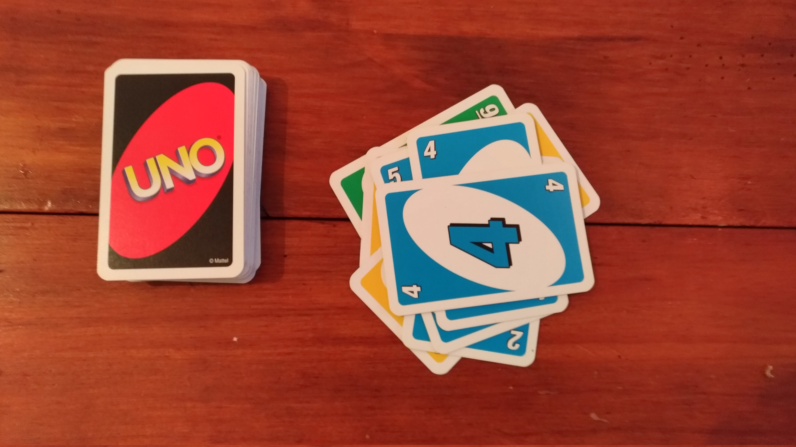
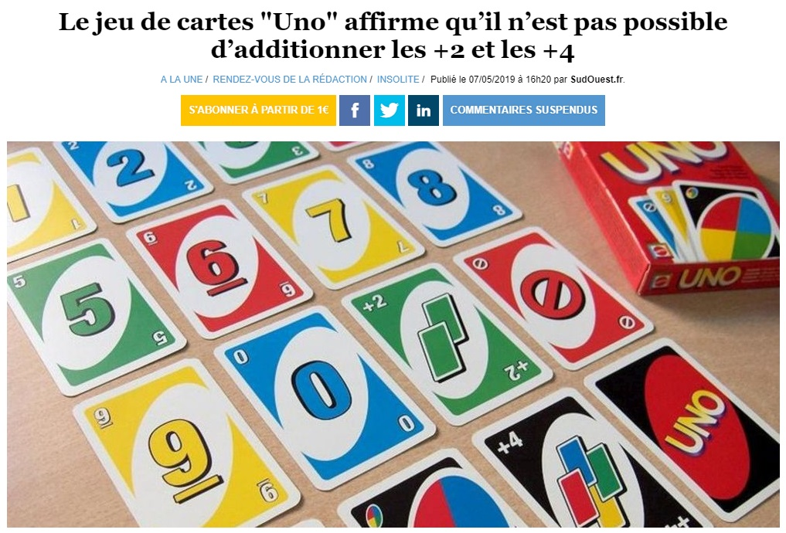
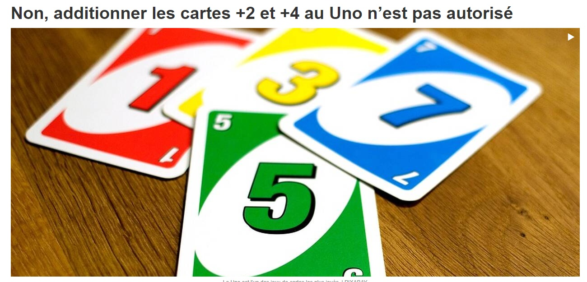
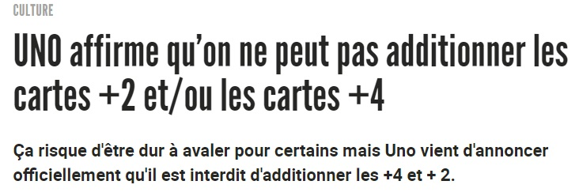
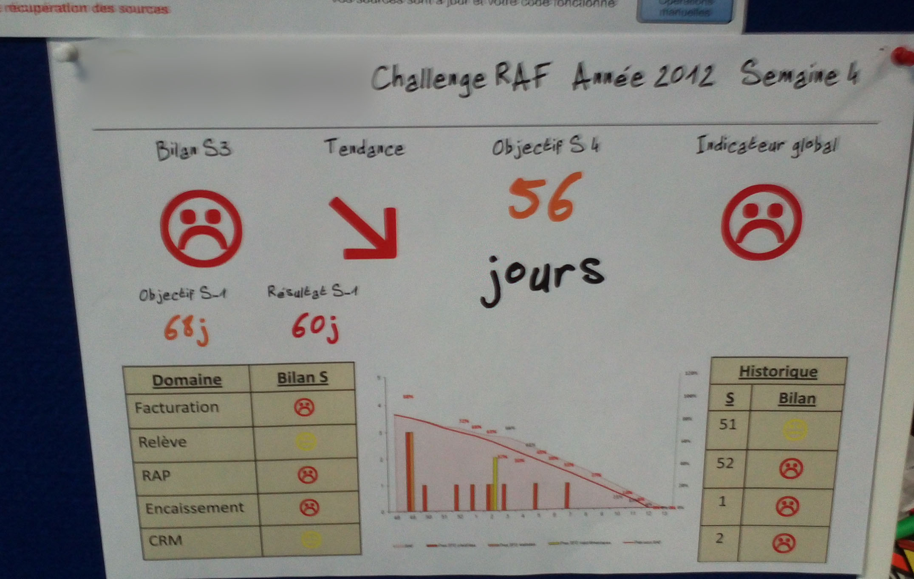
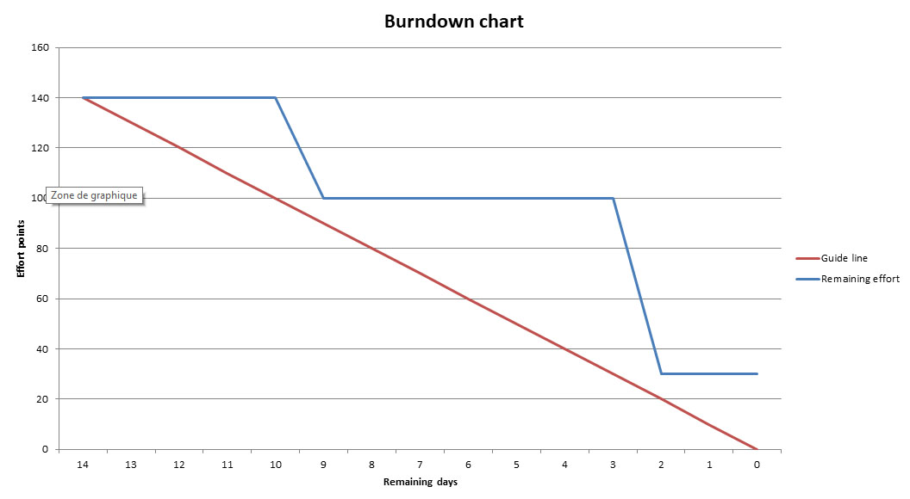
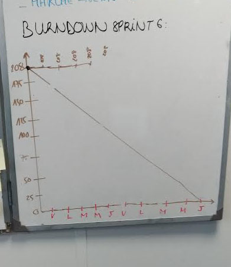
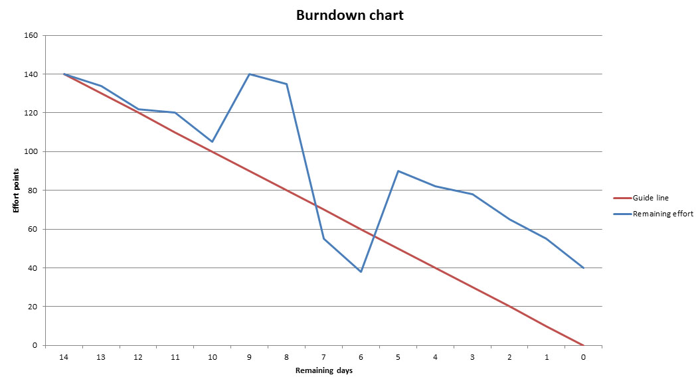
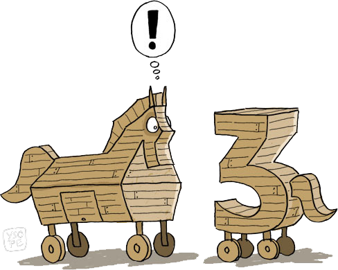

Faites vos p***** de daily correctement




Basile Parent
Scrum Master
@basileparent
Faites vos p***** de daily correctement
Daily reporting




Stop starting, start finishing.

Burndown anarchique
Quelques règles totalement arbitraires :
- Les KPIs doivent être parlants
- Les KPIs doivent être lisibles
- Avoir le courage d'en tenir compte
- KPIs choisis par l'équipe
Le daily meeting est un moment privilégié pour échanger et s'organiser.
Le daily meeting est un moment privilégié pour échanger et s'organiser.
-
Qu'est-ce que j'ai fait hier ?
pour faire avancer le backlog
-
Qu'est-ce que je fais aujourd'hui ?
pour faire avancer le backlog
-
Est-ce que j'ai des points de blocage ?
- Est-ce que j'ai des tâches à ajouter au backlog ?
- Est-ce que j'ai quelque chose à transmettre à l'équipe ?
- Quelle est la santé du sprint ?
- Les 3 questions de manière incrémentale
Sprint planning
Pour maximiser la valeur, commencez par choisir l'objectif.

Règle de Troie
Format de rétrospectives
Se renouveler pour stimuler votre créativité